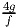

- (15 points) Consider the following canonical form tableau and its associated basic feasible
solution, .
Find a vector v such that the basic feasible solution,
 , obtained by performing the simplex rule pivot
on the tableau can be written as
, obtained by performing the simplex rule pivot
on the tableau can be written as

where λ is the minimum ratio associated with the pivot.
- (5 points) What is the pivot matrix for the simplex rule pivot in part (a)?
Solution:
- x2 enters the basis. The minimum ratio test indicates that x5 leaves the basis, with λ = 3.
The direction v comes from the x2 column of the tableau. The entries for the nonbasic variables that do not change are zero (so for x3). The entry for the incoming variable x2 is 1. The entries for the basic variables x1, x4, and x5 are the negatives of the appropriate entries in the column, so
- With the pivot in the indicated position, the pivot matrix is
- (5 points) Since x2 ≥ 0, the equality constraint implies 3x1 - x3 ≤ 15. Show that the upper bound x2 ≤ 12 also implies an inequality constraint on 3x1 - x3.
- (10 points) Graph the problem in (x1,x3)-space (so interpret x2 as a slack variable in the equality constraint). Draw and label the six bound constraints on your picture.
- (10 points) Solve the problem graphically.
Solution:
- We have
- Picture:

- The objective function contour is indicated in red in the picture. The optimal solution is the extreme point x1 = 1, x3 = 0, so x2 = 12. The optimal value is 5.
Return to the problem (P) of Question 2.
- (5 points) Convert the problem into standard form by introducing slack variables s1, s2, and s3.
- (10 points) The solution x = (6, 3, 6) is feasible in (P). Pivot to canonical form to show that it gives a basic feasible solution to the standard form problem from part (a), with s1 and s3 nonbasic. Is the basic feasible solution optimal? (Hint: You don’t need to use the method of artificial variables. Pivoting in three or four carefully chosen locations in the tableau will give canonical form. You want to end up with x1, x2, x3, and s2 basic.)
Solution:
- The LP is equivalent to the standard form problem
- The initial tableau and pivots are:

which is in canonical form. This is not in optimal form. The basic feasible solution is x = (6, 3, 6) as required, with s = (0, 9, 0).
Return to the problem (P) of Question 2.
The solution x = (6, 3, 6) is a basic feasible solution to this problem with upper bounds, with x1 and x3 both nonbasic at their upper bounds. Make one pivot using the method for handling problems with upper bounds, with x1 becoming basic. What is the updated basic feasible solution?
Solution:
The starting tableau is
Since x1 is at its upper bound, it decreases when it enters the basis, which means that the current basic variable x2 must increase. The upper bound for x2 is 12, its current value is 3, and it changes by 3 units for each unit change in x1, so the minimum ratio value is = 3; this is the decrease in x1. Making the circled pivot gives the updated tableau
The new BFS is x = (3, 12, 6), with x1 basic and x2, x3 both nonbasic at their upper bounds. The value of this BFS is
It is not optimal since x3 is at its upper bound and has a positive reduced cost.
where k ≥ 0.
- Assume e > 0. What can you say about the linear program?
- Assume e < 0 and f,g,h ≤ 0. What can you say about the linear program?
- Assume e = 0 and f,g,h ≤ 0. What can you say about the linear program?
- Assume e = 0, f > 0, and g,h ≤ 0. What can you say about the linear program?
- Assume k = 0, e < 0, and e + g ≥ 0. What can you say about the linear program?
Solution:
- The tableau is in optimal form. The unique optimal solution is x = (k, 0, 0, 4, 6) with value 8.
- The tableau is in unbounded form. A direction d ≥ 0 which has Ad = 0 and cT d < 0 is d = (-g, 1, 0,-f,-h).
- The linear program has an unbounded set of optimal solutions. A direction d ≥ 0 which has Ad = 0 and cT d = 0 is d = (-g, 1, 0,-f,-h).
- The LP has an alternative optimal BFS, which we can find by pivoting on the f entry:
Thus, the alternative optimal BFS is x = (k -,, 0, 0, 6 -).
- If we pivot to bring x2 into the basis, the minimum ratio is 0 and we pivot on the g entry in the
tableau, giving:
Since e < 0 and e + g ≥ 0, all the reduced costs are now nonnegative, so we have an optimal solution, x = (0, 0, 0, 4, 6). This is also the bfs corresponding to the original tableau.